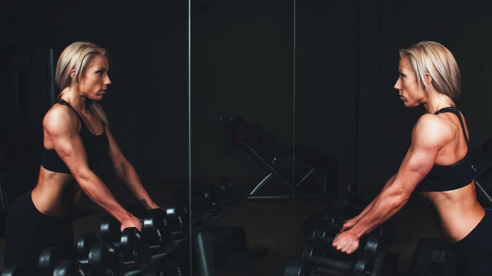

Split routines, or as I like to call them Frankenstein routines (hat-tip to Dan John…) are synonymous with bodybuilding circles.
Few days escape me when I’m not asked a question about a split routine, or to critique a program.
Almost all young men new to the gym (and not in an athletic training environment) will experiment with a split routine at first.
It’s easy to see why young men in particular gravitate towards split routines.
They are the subject of nearly every bodybuilding magazine and even if you don’t want to look like a competitive bodybuilder, there must be something to the madness right?
In fact, this survey of competitive bodybuilders indicated the following:
- 100% are using a split routine
- 95% use 3-6 sets per exercise
- 77% favour a 7-12 repetition range for training
- 67% use 61-120 seconds of recovery time between sets
- 77% of those who answered the question, admitted to steroid use
- 100% used dietary supplementation
- Most seem to change their training just before competition in a dramatic way (less volume, less rest, higher rep range, etc…)
It’s easy to see why many young men might follow in their footsteps, if they are the epitome of muscle building, then obviously we should mimic their approach right?
Its hard for me to dispute that how bodybuilders train is probably effective for bodybuilding, and so if you’re a high level competitive bodybuilder, then a split is probably useful to some degree. Not the least of which are:
- Allows you to more specifically and methodically ‘form’ how a muscle might look on stage
- Allows you to increase training volume in a week and train to complete failure more often (taxing on the body for full body training)
- Allows you to recover better from highly fatiguing, to failure workouts (though steroid use also certainly helps…)
- Allows you to train six days a week rather than 3-4 with total body or upper/lower splits
Yet, many old school bodybuilders like Mike Menzter, or Reg Park, achieved wonderful physiques using total body training, or upper/lower splits long before it became the norm.
There is also an indication that cycling training frequency might be an excellent way to induce new gains and that in trained subjects, total body training has the slight edge for hypertrophy objectives (it’s a short study though…).
There might be a benefit to using a split routine for a phase, then a total body routine for a phase.
Frequency of training is after all, like sets or reps or rest, just another variable we can manipulate to challenge the body in new ways.
As I’ve said before, it is often just the change itself — and not necessarily the specifics of what you change — from what you’ve always done that leads to the greatest benefit.
Training needs to cycle, so as to prevent plateaus and maximize stimulation. The body needs unique stimulation to create adaptation, once a point of diminishing returns is reached.
2-6 weeks for most intermediate trainees, often sooner for advanced trainees, probably up to 12 weeks for beginners…
That’s why there is also a benefit to using high loads and low reps sometimes, or low loads and high reps sometimes.
Why Wouldn’t You Want to Copy?
What remains to be seen if whether or not the common training modalities of elite bodybuilders is ever particularly useful for beginners and intermediate trainees.
Research suggests that taking the same volume of exercise — as opposed the common bodybuilding approach of hammering a muscle group 1 day a week and then giving it a week off — and spreading it out over 3 days instead of one is almost twice as effective for gains.
*1 day a week is 62% as effective as 3-days a week, with the same total work each week…
More advanced training programs are certain to cause a higher frequency of program dropout, excessive muscle soreness, greater complication to lifestyle and in some cases obviously injury.
Not in my mind, ideal for most people who just want to look a bit better naked or drop a few pounds (most of us right?).
It’s questionable that these commonly used bodybuilding methods are the most ideal methods for most people getting started, or even many intermediate lifters for many reasons:
- Higher volume training is often not tolerated well by beginners (more muscle soreness/fatigue…)
- Training to failure often is typically not tolerated well by novices (more muscle soreness/fatigue…)
- Beginners need a strength base prior to significant hypertrophy gains
- Beginners will often slack on training intensity because they simply don’t have experience to understand it yet
- Beginners often have a lower perceived tolerance of exertion (things seem harder when they are new, than they do to the experienced), so they often won’t train as hard as they need to on a split routine.
- Beginners need to establish a routine of training, and more days create more lifestyle restrictions (3 hours of training is a lot easier to get in, than 6 hours) that lead to more missed training days
- Beginners will often set their split routines up to ignore training days they dislike (like skipping leg day!), or do more training for days they do like (like chest day!) — which obviously hurts long term results…
- The body adapts with neurological gains prior to muscle building gains, when you first start training (discouraging many, but you slow the process down with split routines for beginners)
- Research indicates that yes moderate load training may be slightly more ideal in untrained subjects; low load training and high load training can also contribute and cycling a program is important.
- The decision to avoid steroids is also most likely a big reason why splits aren’t seemingly tolerated well by beginners/intermediates…
Needless to say I come across increasingly frustrated young male trainees on a very regular basis…
For instance this young man, or this one.
If you have little experience or strength these methods just don’t seem to work that well.
A lot of the above applies to intermediate trainees too. People who have some training experience, but are often still facing some significant improvements.
So What’s Better?
I’m inclined to say no to split routines for beginners about 99% of the time.
If you’re new to training, or been using a split for years and feel like you’re not getting anywhere: LOSE THE SPLIT ROUTINE!
If your main objective is muscle hypertrophy for intermediates, or you’ve had a little success with a split routine, I suggest cycling in split routines periodically if you’d like, with total body and upper/lower splits.
It’s good to mix things up and while bro-routines certainly don’t make it into my repertoire very often, they do have their place (mostly for semi-serious or competitive bodybuilders).
Maybe 1-3 phases per year of splits, until you want to compete in bodybuilding, in which case, up the amount to 3-9 phases a year.
For athletes, the focus should always be on performance and even with very advanced athletes I find total body or upper/lower splits to be favourable (and quite frankly the norm anyway…).
It’s hard to do olympic lifting and compound complicated movement training with anything less than an upper/lower 2-day split.
The latter of which can be nice for keeping resistance training around 4x a week.
Though introducing a split if an athlete needs to gain some muscle isn’t necessarily a bad idea from time to time…
For the majority of people full body or upper/lower 2-day splits allow for:
- Optimal frequency of training (every 48-72 hours)
- Greater recovery (get more days off)
- Easier integration into life (less time in the gym)
- In my experience, better fat loss (which is arguably most important for more people…) for multiple potential reasons
- Better integration of energy system training (and obviously some aerobic training, also these contribute to the fat loss factors mentioned above…)
- Are better for a more general or a more complete approach to training as a result (health for instance…)
- For flexibility. They are easier to manipulate to fit into lifestyle if you miss a day (you’re not skipping training anything really ever)
- Typically better for strength or athletic objectives because they train complete movements rather than muscles…
- You can get more done in less time (more effective dose)
Again when you look at the volume adjusted comparison of total body training to split training in trained subjects you still see a slight edge to total body training, but at the end of the day it’s really about exploring your options and figuring out what works for you.
There might be some advantages to a split for you, like more volume (if you need it), a change of pace/routine, or maybe it fits better into your lifestyle.
If that’s five times a week of lifting weight, then you can only accomplish that with a split.
If you can only do resistance training on back to back days, then obviously you need to use a split too.
Ultimately it comes down to you and how you can plan your routine, I have to use splits with people sometimes, and you might have to as well.
I just rarely come across a person where that 4-6 day a week body split approach fits ideally into their lifestyle.
Few people want to spend six hours a week lifting in my experience.
What About Women?
I know a lot of this was directed at young men, not a typical demographic of this blog, but I do occasionally work with them (they also tend to be more active on the interwebz to ask me questions…).
As a final note, I think it goes without saying that I favour full body resistance training for most women.
It just generally appeals to the look and approach that most women desire. That’s my experience…
As a side note, most of the women I work with avoid split routines like the plague anyway, because most don’t like the bodybuilder aesthetic.
They tend to be more guilty of using next to no resistance training, and just energy system training, or far too much aerobic training.
Not that great for aesthetics on it’s own (though wonderful when combined with resistance training at least 2 days a week).
However, in my experience full body training works wonders for the female form, particularly undulating patterns whereby you cycle between higher reps and lower reps weekly or daily at different intensities.
When to Use Them…
All that being said, I’m always for finding a new stimulus if warranted.
My argument is mostly that they shouldn’t be the bulk of anyone’s training approach within the year until they have A) high level aesthetics objectives similar to that of bodybuilders or B) have a certain baseline of training skill and experience under their belt.
I have periodically introduced more isolated training methods and split routines into my own training and in my training of others for some of the following reasons:
- You want to make a specific body part look a certain way
*Arguably, I’ve found better success by using an upper/lower split and then adding isolation exercises at the end of each training session, but if a person can’t tolerate that, then a split can be a way to go.
- You need to get more volume of training, particularly more training volume in to fatigue
- You have hypertrophy objectives and are doing most of your training in a 6-12 rep range anyway
- You have aesthetics objectives similar to that of bodybuilders (look good on stage), actors (look good on stage or in video…), or models (look good in print or otherwise…)
- You start to find that total body training, or 2-day splits are too exhausting for your objectives (rare but might happen, can usually be controlled by monitoring intensity…)
Now you know, and knowing is half the battle.
Article credit: Skill Based Fitness / CC BY
Cover photo: Scott Webb